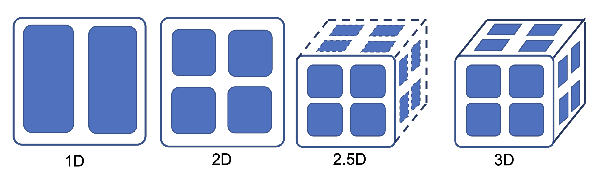

Tensor Model Parallelism Tutorial
Contents
Tensor Model Parallelism Tutorial
Authors: Kichang Yang, Kevin Ko

Tensor Model Parallelism makes it possible to train larger models by partitioning the parameter tensors into multiple dimensions. We also support 2D, 2.5D, and 3D tensor partitioning which make tensor parallel training more efficient unlike Megatron-LM which simply splits parameters into single dimensions such as rows and columns.
Table of contents
Tensor Model Parallelism Tutorial
Table of contents
0. Distributed Launcher
1. Inference
1.1. Create model and tokenizer
1.2. Parallelize the model
1.2.1 Tensor Parallel Algorithms
1.3. Do inference as usual
2. Training
2.1. Initialize some variables
2.2. Create model, optimizer and tokenizer
2.3. Parallelize the model
2.4. Load dataset and create dataloader
2.5. Do training as usual
2.6. Save the parallelized model
2.6.1. Merging Checkpoints
Appendix. Multi-node Training
0. Distributed Launcher
This tutorial must be launched using distributed launcher.
If you have 4 GPUs:
torchrun --nproc_per_node=4 YOUR_SCRIPT.py
If you installed Slurm in your environments, the following works the same.
srun --num_gpus=4 YOUR_SCRIPT.py
For more information of the distributed launchers, refer to:
1. Inference
How to use the tensor model parallelism for inference?
1.1. Create model and tokenizer
Warning : model must be assigned in cpu, not CUDA
from transformers import AutoModelForCausalLM, AutoTokenizer
model = AutoModelForCausalLM.from_pretrained("gpt2")
tokenizer = AutoTokenizer.from_pretrained("gpt2")
1.2. Parallelize the model
You can parallelize the model you defined is only 2 steps required.
Just making define parallel_context , and call oslo.ready function.
parallel_context Is the variable for define the method how to parallelize to oslo.
Here is some explain about arguments to parallel_context.
tensor_parallel_sizemust be same or smaller than total num of gpus.tensor_parallel_sizemust be power of 2. (e.g. 2, 4, 8, 16, …)tensor_parallel_sizemust be positive number.tensor_parallel_modesupport 4 types of tensor parallel algorithm. For more details, see section 1.2.1TENSOR_1D : same as megatronLM
TENSOR_2D : Using summa algorithm.
TENSOR_2p5D : Using 2.5d summa algorithm ( much effective in Communication costs between layers. )
TENSOR_3D : Using cubic-3d algorithm
tensor_parallel_depthmust be If the mode is…2p5D : same or lower than
tensor_parallel_sizeNot 2p5D : must be 1.
pipeline_parallel_sizemust be 1 if you want to usetensor_parallelalgorithm ( mixing PP and PP will be supported in later version.)
import oslo
from oslo import ParallelContext
from oslo.torch.nn.parallel import TensorParallel
tp_size = 4
tp_depth = 1
parallel_context = ParallelContext.from_torch(
data_parallel_size=1,
pipeline_parallel_size=1,
tensor_parallel_size=tp_size,
tensor_parallel_mode=ParallelMode.TENSOR_1D,
tensor_parallel_depth=tp_depth,
)
model = TensorParallel(model, parallel_context)
oslo.ready(model, parallel_context)
1.2.1 Tensor Parallel Algorithms
You can find the details of the algorithms in the CONCEPTS section. see here:
Concept of Tensor Parallel Algorithms
1.3. Do inference as usual
This is an example of text generation. In addition to this, it can be used in various tasks such as sequence classification or masked lm. Likewise, you can write the code as usual.
text = "I don't want a lot for Christmas. There is just one thing"
tokens = tokenizer(text, return_tensors="pt").to("cuda")
print(tokenizer.decode(model.generate(**tokens, num_beams=3)[0]))
I don't want a lot for Christmas. There is just one thing I want to ...
2. Training
How to use the tensor model parallelism for training?
2.1. Initialize some variables
BATCH_SIZE = 4
SEQ_LEN = 64
SAVE_INTERVAL = 50
TRAIN_STEP = 100
2.2. Create model, optimizer and tokenizer
from torch.optim import Adam
from transformers import AutoModelForCausalLM, AutoTokenizer
model = AutoModelForCausalLM.from_pretrained("gpt2")
optimizer = Adam(model.parameters(), lr=3e-5)
tokenizer = AutoTokenizer.from_pretrained("gpt2")
# Add pad token for batch training because GPT2 tokenizer doesn't have pad token.
tokenizer.pad_token = tokenizer.eos_token
2.3. Parallelize the model
# model = defined in section 2.2
from oslo import ParallelContext
from oslo.torch.nn.parallel import TensorParallel
tp_size = 4
tp_depth = 1
parallel_context = ParallelContext.from_torch(
data_parallel_size=1,
pipeline_parallel_size=1,
tensor_parallel_size=tp_size,
tensor_parallel_mode=ParallelMode.TENSOR_1D,
tensor_parallel_depth=tp_depth,
)
model = TensorParallel(model, parallel_context)
oslo.ready(model, parallel_context)
2.4. Load dataset and create dataloader
In this tutorial, We’re going to use datasets library of Hugging Face.
from datasets import load_dataset
from torch.utils.data import DataLoader
datasets = load_dataset("squad").data["train"]["context"]
datasets = [str(_) for _ in datasets[: TRAIN_STEP * BATCH_SIZE]]
dataloader = DataLoader(datasets, batch_size=BATCH_SIZE, shuffle=True)
2.5. Do training as usual
for step, batch in enumerate(dataloader):
optimizer.zero_grad()
# Make batch
input_batch = tokenizer(
batch,
return_tensors="pt",
padding=True,
truncation=True,
max_length=SEQ_LEN,
).to("cuda")
# Forward-Backward-Step
loss = model(**input_batch, labels=input_batch["input_ids"]).loss
loss.backward()
optimizer.step()
2.6. Save the parallelized model
We support save_pretrained method, and this is similar with save_pretrained in the Transformers.
So, it can be used with the same argument with save_pretrained.
Then, the checkpoints like pytorch_model_tp_${TP_RANK}_pp_${PP_RANK}_ep_${EP_RANK}.bin will be saved in your local path.
# Save the parallelized model using `save_pretrained`
model.save_pretrained(save_directory="./parallel_ckpt")
2.6.1. Merging Checkpoints
If you want save your models with merged status, you just only pass one more arguments merge_checkpoints=True to save_pretrained function.
Here is the modified code in section 2.6 for save checkpoints to merged version.
# Save the merged model using `save_pretrained`
model.save_pretrained(
save_directory="./parallel_ckpt",
merge_checkpoints=True # Different point in Section 2.6
)
Appendix. Multi-node Training
There are three types of training methods are supported by oslo.
torch distributed ( torchrun, recommended )
# Node #1 torchrun --nnodes=2 --node_rank=0 --nproc_per_node=4 --master_addr=${YOUR_NODE_ADDRESS} --master_port=${PORT} YOUR_SCRIPT.py # Node #2 torchrun --nnodes=2 --node_rank=1 --nproc_per_node=4 --master_addr=${YOUR_NODE_ADDRESS} --master_port=${PORT} YOUR_SCRIPT.py
Slurm : Slurm using SBATCH file, and then running sbatch sbatch_file.sh command.
#!/bin/bash #SBATCH --job-name=${JOBNAME} #SBATCH --partition=gpu #SBATCH --time=infinite ### e.g. request 8 nodes with 8 gpu each, totally 64 gpus (WORLD_SIZE==64) ### Note: --gres=gpu:x should equal to ntasks-per-node #SBATCH --nodes=4 #SBATCH --ntasks-per-node=4 #SBATCH --cpus-per-task=6 #SBATCH --gres=gpu:4 # number of gpus per node #SBATCH --mem=64gb export HOSTNAMES=`scontrol show hostnames "$SLURM_JOB_NODELIST"` export MASTER_ADDR=$(scontrol show hostnames "$SLURM_JOB_NODELIST" | head -n 1) export MASTER_PORT=${PORT} export COUNT_NODE=`scontrol show hostnames "$SLURM_JOB_NODELIST" | wc -l` python YOUR_SCRIPT.py
And then, run
sbatch sbatch_file.py